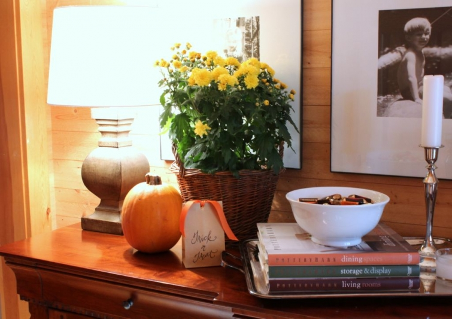
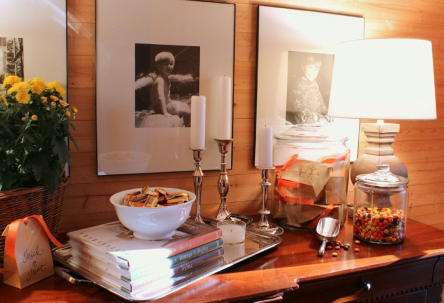

.png)
.PNG)
.PNG)
.PNG)
.PNG)
.PNG)
.JPG)
.JPG)
.PNG)
.PNG)


The pumpkins, mums, and candy are alive and well on the foyer buffet. Last year I went all black in there, but this year I went with orange accents. And again we have bags on which I lettered Trick or Treat with candy in them waiting for the little goblins that appear at our door…some of which are students of mine.
I have already refilled that jar of Reese’s Pieces twice. It seems that the peanut butter and chocolate lovers around here can’t resist them!
 Now come on into the living room. I picked up that pillow with the orange stripe at Target…love the simple contrast.
Now come on into the living room. I picked up that pillow with the orange stripe at Target…love the simple contrast.
Jar girl here just had to put some pumpkins in a jar, right?
And even my water bottles have orange labels. LOL I always think if you can make utilitarian work in your decor, by all means go for it.
And the mantel gets a jar of pumpkins too. This jar has been interesting. Those little pumpkins keep giving off moisture, so periodically we have to take the lid off…and I have checked to see if any of them were rotting, but that is not the case. I would recommend buying small faux pumpkins for this if you are going to do it. (The jar with the larger pumpkin does not do this for some reason.)
The mantel also sports an old photo of the children dressed for trick or treat from years ago. That was the year of the Toy Story costumes…Buzz Lightyear and Woody and Mr. Potato Head. (Daughter keeps asking me why she had to be Mr. not Mrs. Potato Head.)
Here is a view of the whole fireplace with its pumpkins, mums, and candy. It hasn’t been quite cold enough here for a fire yet, so the mums are safe there for now.
Now let’s wander down the hall to the bedrooms. The small hallway bench has a touch of Halloween with a few children’s books for the holiday.
Stopping off at the children’s bathroom, you will see that the pumpkin and mum addiction didn’t overlook that room.
Nor did it overlook the master bath.
Now one last stop in the master bedroom where mums and a pumpkin sit on the bedside table.
That’s all for now. We have one more room in the house and one outside to see next time. Thank you for putting up with the pumpkin, mum, and candy craze here!
Hope to see you back here soon. 🙂


.PNG)
[…] More Details Here […]
Kelly – I’ve been waiting for pictures of your fall home. Yea!!! I love your fireplace and that cozy chair and ottoman. I would definitely curl up with a good book and some tea and spend my day beside the fire. Everything looks great. Thanks for sharing!
———————————————————————–
Well I am glad you liked it all, Kelly. It is the best seat in the house! And thank you for all your very kind words on your pins on pinterest. You are too sweet!
Kelly
Well shoot, now I am in love with those jars again – you are so creative in how you fill them and use them for seasonal decor. I well remember them with gingerbread houses residing within! You home is just beautiful and welcoming. Thanks for the Fall Tour 🙂
———————————————————————
Oh dear…sorry about the jars! 🙂 I do love them too. Thanks for coming along on the fall tour…time to start thinking about Thanksgiving.
Kelly
Sweet decorating. How do you water all those mums and not get the furniture, books, mantel, wet???? Your home is just so welcoming and cozy, ready for some fall snuggling in. I’m just getting going after a late night watching THE game. Making pumpkin snickerdoodles and doing some errands before greeting the little trick or treaters. Happy Halloween, Kelly!
———————————————————————–
Paula, if the mums are in pots they go to either the kitchen sink or the bathtub to be watered with a sprayer. Those that are not in pots, are sitting in a ziplock bag inside whatever they are in. I have a cup with a very long spout that is good for watering (and filling the iron.) I have no idea what that cup was really designed to do. LOL. Yep, that was THE game! I know you enjoyed it. Hope you had lots of little darlings at your door this evening (but enough candy left over for you to have a treat or two, also.) I promised my daughter I would save some of ours for her when she comes home for the weekend.
Kelly
We always decorate with mums and pumpkins both inside and outside our home also. I just love them for Fall decorating. I made monster cookies last week reeses pieces and they were wonderful! All of the Fall colors are just so cozy. Thanks for sharing. I can’t wait to see what else you have done.
One word – LOVE!
I never tire of seeing your beautiful home. I just love it! You are so talented and your vignettes are some of the best.
You always have the best vignettes. I LOVE it all.
Oh Kelly I just love your home! You have such great style. Thanks for sharing with us.
So beautiful Kelly! I love that you have this blog and take the time to share your cozy home with us. The small pumpkins and mums are such a small touch but they are perfect for fall decorating. I didn’t think about putting mums inside this year but will remember for next year!
I love all the decorations! With all my kids gone, I’m not really into the Halloween decorations. I love the idea of Reese’s Pieces. Candy corn is my favorite at this time of year. All the stores around here are out and Reese’s Pieces would be a perfect replacement! My aunt used to always insist that we come in the back door. Only “guests” used the front door. haha
Oh, I’m featuring other bloggers on my blog this week. I have you scheduled in for Thursday.
Kelly,
I think your home should be in a magazine…I love your festive touches. Love the orange labels on the water bottles, I’m a fan of incorporating pretty labeling into decor when it works!
Karen
You have inspired me to get started on those popcorn balls I’ve been putting off since the weekend! Love the simple little pumpkins/mums/orange splashes here and there! I think orange is the “new black” this season! Happy Boo Week to you and yours!!:)
I am not a big fan of the scary Halloween decorating either. I love pumpkins and mums and you have done a wonderful job incorporating them into your decor. I have to chuckle when I see your glass jars with candy in them…..I could never do that…my husband has NO self control when it comes to candy and if he sees it, it must be eaten.
What a Re”treat”. Everything, as always, looks so beautiful.
Your home looks great, but then it always does!
Beautiful!!! I love the pumpkins in jars. I too could be a jar girl. I also like the simplicity of that Target pillow. And, I will be writing “Trick or Treat” on bags at some point!
You always inspire!
Your home looks so festive! What fun to display Halloween photos from your children’s past! I also love the book displays. Thanks for sharing!